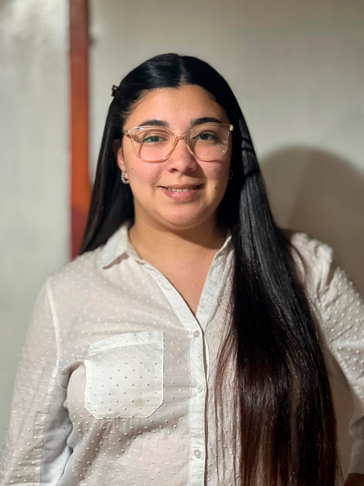

02 / PERFIL
Sobre mí

Diseño desde el concepto
y la funcionalidad.
Soy estudiante avanzada de Diseño y Comunicación Visual en la Universidad Nacional de Lanús.
Me interesa
desarrollar proyectos que integren una búsqueda conceptual sólida, sensibilidad estética y soluciones
funcionales.
Mi experiencia abarca el diseño de identidades visuales, packaging y comunicación digital,
trabajando tanto en proyectos académicos como con clientes reales.
- Formación
- Diseño y Comunicación Visual · UNLa
- Especialidades
- Identidad visual · Packaging · Diseño digital
- Ubicación
- Buenos Aires, Argentina
Experiencia
Diseño gráfico freelance
Identidad visual, packaging y comunicación gráfica para marcas y emprendimientos.
Gestión y coordinación comercial
Vital Water · 2023 - Actualidad. Atención al cliente, coordinación de procesos comerciales y gestión de herramientas digitales.
Herramientas
Diseño gráfico
Illustrator · Photoshop · InDesign
Diseño digital y desarrollo
Figma · HTML · CSS · Visual Studio Code
Formación académica
Diseño y Comunicación Visual
Universidad Nacional de Lanús (UNLa) · En curso
Descargar CV ↗